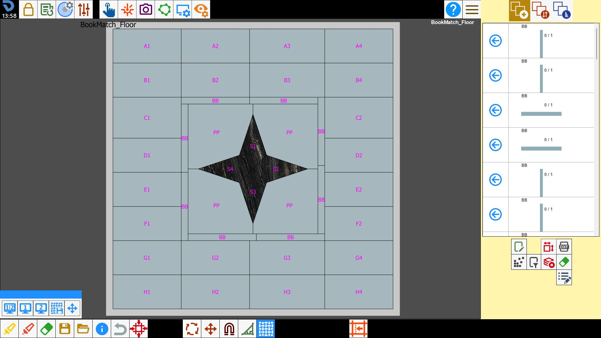
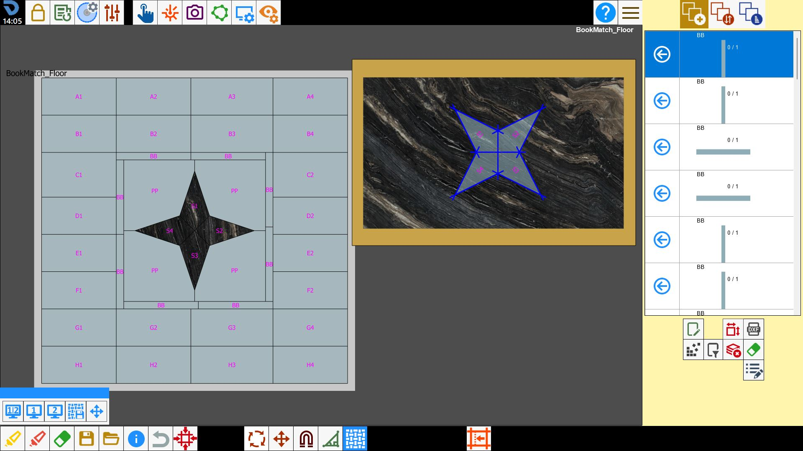
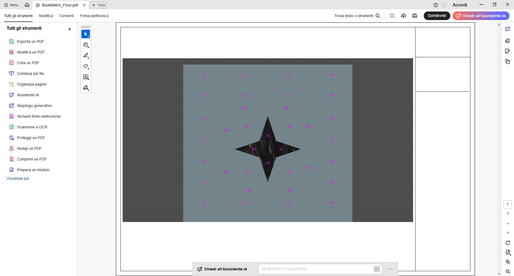
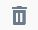

Mit der Funktion Easy Match kann in Echtzeit der Hintergrund angezeigt werden, den die Werkstücke an ihrer ursprünglichen Konstruktionsposition erhalten, während sie auf dem Arbeitstisch über einer Platte verschoben werden.
Der Easy-Match-Modus funktioniert nur bei Werkstücken, die aus DXF-Dateien importiert wurden.
/0.00.png)
Schaltflächen
Nach Drücken der Schaltfläche öffnet sich das folgende Panel:
/image-20250623-092224.png)
/1.2-20250623-092621.png) | Geteilte Ansicht |
/1.3-20250623-092752.png) | Vorschauansicht |
/1.4-20250623-092845.png) | Arbeitstischansicht |
/1.5-20250623-092940.png) | Vorschau speichern |
Vorschau bearbeiten |
Vorschauansicht
Ermöglicht das Verschieben der Werkstücke durch Klicken innerhalb des Werkstückumfangs, sodass das Werkstück präziser an der gewünschten Position platziert werden kann.

In der Vorschau werden alle Werkstücke aus der importierten Datei exakt an ihrer konstruierten Position angezeigt.
Die Größe der Vorschau entspricht im Maßstab 1:1 der Größe der konstruierten Werkstücke.
Auf dem Arbeitstisch hinzugefügte Werkstücke übernehmen die Farbe der Platte, während noch hinzuzufügende Werkstücke einen einfarbigen Hintergrund haben.
In der Vorschau können folgende Aktionen ausgeführt werden:
Ein Werkstück zum Arbeitsbereich hinzufügen, indem in den zu bearbeitenden Bereich geklickt wird.
Ein Werkstück auf dem Arbeitstisch verschieben.
Ein Werkstück auf dem Arbeitstisch auswählen, indem in das Werkstück geklickt wird.
Ein Werkstück aus der Vorschau löschen, indem zuerst der Radiergummi unter der Werkstückliste und anschließend das zu löschende Werkstück in der Vorschau ausgewählt wird. In diesem Fall wird das Werkstück auch vom Arbeitstisch und aus der Werkstückliste entfernt.
Arbeitstischansicht
Klassische Ansicht des Parametrix-Arbeitstischs. Ermöglicht das Verschieben der Werkstücke auf dem Arbeitstisch unter Nutzung des gesamten Bildschirms.
/0.02.png)
Geteilte Ansicht
Ermöglicht die gleichzeitige Anzeige der Projektvorschau und des Arbeitstischs auf demselben Bildschirm.

Vorschau speichern
Ermöglicht das Speichern der Vorschau der aktuellen Bearbeitung.
Der folgende Bildschirm wird geöffnet:
/image-20250623-094436.png)
Es muss gewählt werden, wie die Vorschau heißen soll, ob sie als Bild oder PDF gespeichert wird, wo sie gespeichert werden soll und welche Auflösung verwendet wird.
Für die Auflösung stehen auto (automatische Auflösung), low, medium, high, ultra und custom (genaue Auflösung durch den Bediener) zur Verfügung.
Nach der Bestätigung wird das Foto bzw. PDF der Vorschau automatisch geöffnet.
/image-20250623-094751.png)

Vorschau bearbeiten
Auf diesem Bildschirm können die Werkstücke der Vorschau frei angeordnet werden.
Alle vorgenommenen Änderungen werden anschließend auch in den anderen Ansichten angezeigt.
/image-20250623-095011.png)
In der oberen Leiste befinden sich folgende Schaltflächen.
/2.02.png) | Werkstücke bewegen |
/2.03.png) | Ansicht verschieben |
Vorschau anpassen
Im Panel der Programmparameter kann auf der Registerkarte Benutzerwerte die Farbe einiger Elemente der Projektvorschau geändert werden.
/4.00-20251008-084143.png)
Umfang | Ermöglicht das Anzeigen/Ausblenden der Werkstückumrisse in der Vorschau. |
Name | Ermöglicht das Anzeigen/Ausblenden der Werkstücknamen in der Vorschau. |
Hintergrund | Ermöglicht das Einstellen der Hintergrundfarbe der Vorschau. |
 | Hintergrund entfernen |
Arbeitsablauf
Um Easy Match zu verwenden, muss das Projekt aus einer DXF-Datei in Parametrix importiert werden.
Das Programm zeigt eine Book-Match-Vorschau der in der Datei enthaltenen Werkstücke an.
/3.00.png)
Nach Aufnahme eines Fotos des Arbeitstischs können die zu schneidenden Werkstücke auf der Platte positioniert werden.
Dazu kann das klassische Verfahren über die Werkstückliste verwendet oder innerhalb des Umfangs eines der in der Vorschau angezeigten Werkstücke gedrückt werden.
Wird das Werkstück aus der Vorschau gezogen, bewegt es sich auch auf der Platte. Dies ist nützlich, um die Maserungen der verschiedenen Werkstücke aufeinander abzustimmen.
Der Vorgang ist auch umgekehrt möglich: Das Werkstück kann von der Platte gezogen werden, und in der Vorschau ist anhand seiner Position erkennbar, ob die Maserungen übereinstimmen.
/3.01.png)
Anschließend mit dem Standardverfahren für die Bearbeitung fortfahren: ISO-Programm erstellen und Platte schneiden.
Nach Abschluss die Schaltfläche drücken, um zur nächsten Bearbeitung zu wechseln.
Der Fortschrittsstand des Projekts bleibt in der Vorschau gespeichert.
Anschließend ein Foto einer neuen Platte aufnehmen und die Werkstücke innerhalb des Umfangs positionieren.
/3.02.png)
Diesen Vorgang fortsetzen, bis das Projekt abgeschlossen ist.